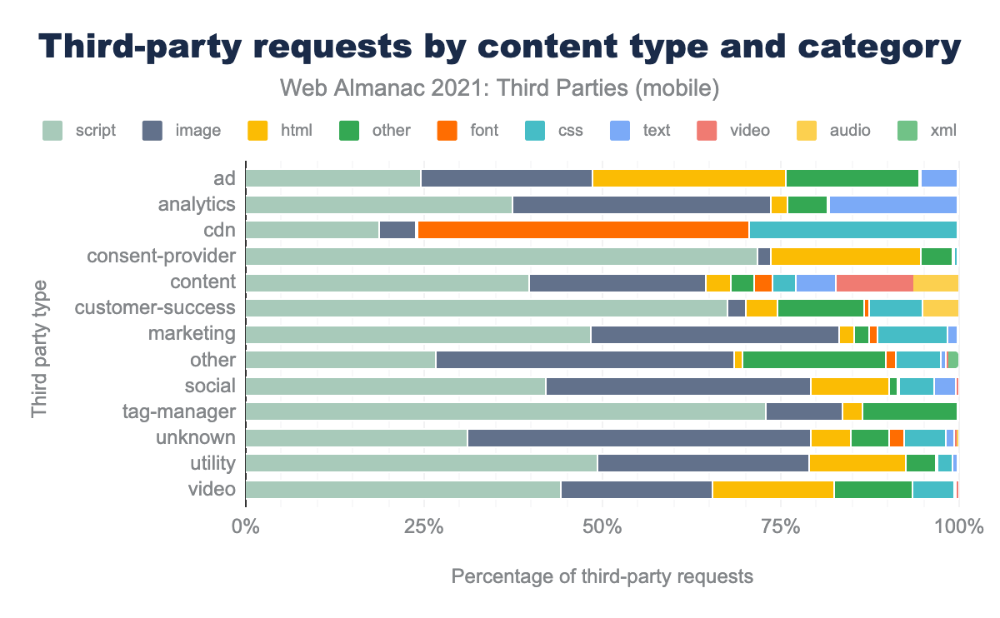
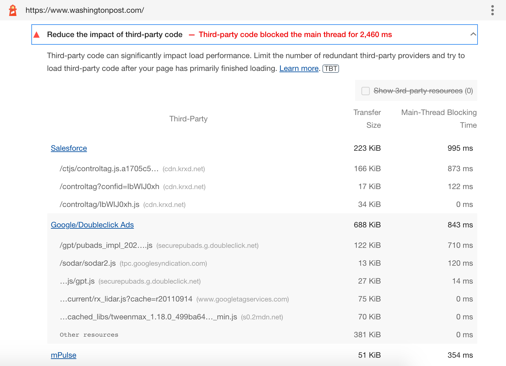
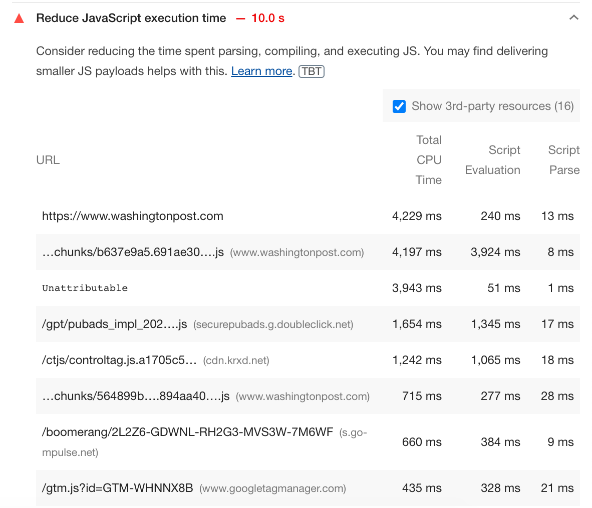
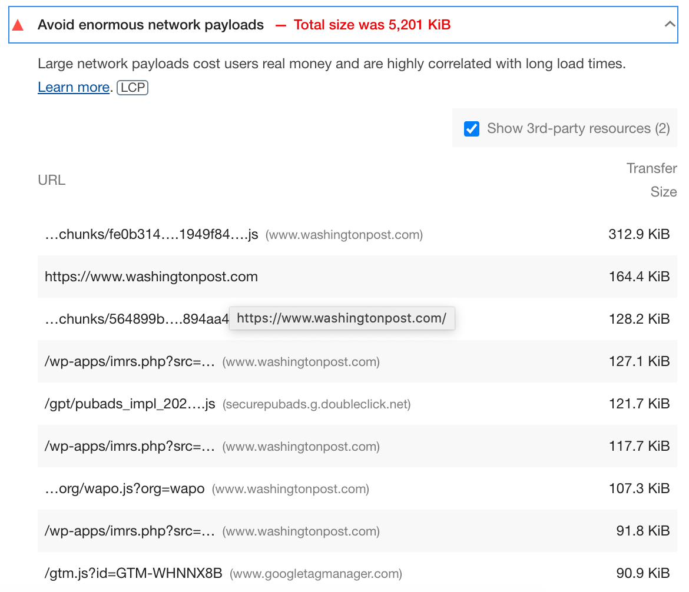

أنماط JavaScript
تحسين تحميل الأطراف الثالثة
tl;dr: يمكن للموارد من طرف ثالث (third-party) أن تُبطئ المواقع وأن تكون تحديًا في التحسين. يمكنك اتباع أفضل ممارسات معينة لتحميل أنواع مختلفة من الأطراف الثالثة أو تأخيرها (delay) بكفاءة. ويمكنك أيضًا استخدام مكوّنات على مستوى الأطر مثل مكوّن Script في Next.js، الذي يوفّر قالبًا لتحديد «متى» و«كيف» لتحميل سكربتات الأطراف الثالثة. وبدلًا من ذلك، قد تكون أفكار تجريبية مثل Partytown موضع اهتمام.
من الصعب العثور على موقع حديث يعمل في عزلة. معظم المواقع تتعايش وتعتمد على عدة مصادر أخرى على الويب للحصول على البيانات والوظائف والمحتوى وغيرها الكثير. وأي مورد يقع على نطاق (domain) آخر ويستهلكه موقعك يُعد موردًا من طرف ثالث (3P) لموقعك. ومن بين موارد الأطراف الثالثة المعتادة التي تُضمَّن في المواقع:
- تضمينات الخرائط والفيديوهات ووسائل التواصل الاجتماعي وخدمات المحادثة
- الإعلانات
- مكوّنات التحليلات ومديرو الوسوم (tag managers)
- سكربتات اختبارات A/B والتخصيص
- مكتبات الأدوات المساعدة التي تقدّم دوالّ مساعدة جاهزة للاستخدام مثل المستخدمة في تصوير البيانات أو الرسوم المتحركة.
- reCAPTCHA أو CAPTCHA للكشف عن الروبوتات (bots).
يمكنك استخدام الأطراف الثالثة لدمج ميزات أخرى تضيف قيمة إلى محتواك أو لتقليل بعض الأعمال المرهقة التي تنطوي عليها بناء موقع من الصفر. ووفقًا لتقرير Web Almanac لعام 2021، فإن أكثر من 94% من الصفحات على الويب تستخدم الأطراف الثالثة — وتُشكّل الصور وJavaScript المساهمين الأكثر أهمية في محتوى الأطراف الثالثة. وفيما يلي تفصيل مفيد لطلبات (requests) الأطراف الثالثة حسب نوع المحتوى (content type) والفئة (category):

رغم أن موارد الأطراف الثالثة تضيف إلى موقعك ميزات قيّمة، فإنها يمكن أيضاً أن تُبطّئه في الحالات التالية:
- تسبب رحلات ذهاب وإياب إضافية إلى نطاق الطرف الثالث لكل مورد مطلوب.
- تستهلك كثيرًا من JavaScript (ما يؤثر في زمن التنزيل والتنفيذ (execution)) أو تكون ضخمة الحجم بسبب صور/فيديوهات غير محسّنة.
- لا يستطيع مالكو المواقع الأفراد التأثير في التنفيذ، وقد يكون سلوكهم غير متوقع.
- يمكنها حجب العرض (render) لموارد حرجة أخرى في الصفحة والتأثير في مؤشرات Web Vitals الأساسية (CWV).
على الرغم من هذه المشكلات، قد تكون الأطراف الثالثة ضرورية لأعمالك. وإذا لم تستطع الاستغناء عن الأطراف الثالثة (3P)، فإن ثاني أفضل شيء هو تحسينها لتقليل تأثيرها على الأداء — وهذا ما سنتناوله في هذا القسم.
لقد أدرجنا بعض الاستراتيجيات وأفضل الممارسات التي تنطبق على أنواع مختلفة من سكربتات الأطراف الثالثة. ويضم مكوّن Script في Next.js كثيرًا من أفضل الممارسات هذه، ويمكنك التعرّف عليه في النصف الثاني من هذه المقالة. لنرَ أولًا كيف يمكنك اكتشاف ما إذا كان سكربت من طرف ثالث يضر بأداء الصفحة.
تقييم تأثير موارد الأطراف الثالثة (3P) على الأداء
يمكنك استخدام مجموعة من التقنيات لمعرفة كيف يؤثر كود الأطراف الثالثة في موقعك.
- تساعد عمليات تدقيق Lighthouse التالية في تحديد سكربتات الأطراف الثالثة البطيئة التي تؤثر في CWV: تقليل تأثير كود الأطراف الثالثة للسكربتات التي تحجب الخيط الرئيسي (main thread).
- تقليل زمن تنفيذ JavaScript للسكربتات التي تستغرق وقتًا طويلًا في التنفيذ
- تجنّب أحمال الشبكة (network payloads) الضخمة للسكربتات الكبيرة



- استخدم مخطط شلال Waterfall الخاص بـ WebPageTest (WPT) لتحديد سكربتات الأطراف الثالثة التي تحجب، أو استخدم مقارنة WPT جنبًا إلى جنب لـقياس تأثير وسوم الأطراف الثالثة.
- تساعد مواقع مثل Bundlephobia في تقييم تكلفة إضافة حزم npm المتاحة إلى حزمك (bundles). ويمكنك أيضًا معرفة الحجم والاعتماديات المتضمّنة في أي حزمة باستخدام بحث حزم npm.
بعد هذا الطرح حول تحديد كود الأطراف الثالثة الذي يمثّل مشكلة، فلنستكشف طرق تحسينه.
استراتيجيات التحسين
نظرًا لأن كود الأطراف الثالثة ليس تحت سيطرتك، فلا يمكنك تحسين المكتبات مباشرة. وهذا يترك لك خيارين.
- الاستبدال أو الإزالة: إذا كانت القيمة التي يقدّمها سكربت الطرف الثالث لا تتناسب مع تكلفته من حيث الأداء، ففكّر في إزالته. ويمكنك أيضًا تقييم بدائل أخرى خفيفة الوزن لكنها تقدّم وظائف مماثلة. وفي دراسة الحالة هذه، نناقش كيف حسّنا أداء تطبيق أفلام بالاستبدال إلى بدائل أخف وزنًا ذات ميزات مماثلة.
- تحسين تسلسل التحميل: تتضمن عملية تحميل عدة موارد من الطرف الأول (first-party) ومن أطراف ثالثة في المتصفح. ولتصميم استراتيجية تحميل مثلى، ستحتاج إلى مراعاة الأولوية التي يمنحها المتصفح للموارد المختلفة، وموضعها في الصفحة، وقيمة كل مورد بالنسبة إلى صفحة الويب. وقد اقترحنا تسلسل تحميل مثاليًا لتطبيق React/Next.js. وسنرى الآن كيف ينطبق هذا على موارد الأطراف الثالثة المختلفة والخطوات التي يمكننا اتخاذها لتحميلها على النحو الأمثل.
تحميل سكربتات الأطراف الثالثة (3P) بكفاءة
فيما يلي أفضل الممارسات المجرَّبة عبر الزمن التي يمكن أن تقلل تأثير موارد الأطراف الثالثة على الأداء عند استخدامها بصورة صحيحة.
استخدم async أو defer لمنع السكربتات من حجب بقية المحتوى
ينطبق على: السكربتات غير الحرجة (مديرو الوسوم، التحليلات)
تنزيل JavaScript وتنفيذه متزامن افتراضيًا، ويمكنه حجب محلّل HTML وبناء DOM في الخيط الرئيسي (main thread). ويؤدي استخدام سمتَي async أو defer في العنصر `` إلى إخبار المتصفح بتنزيل السكربتات بشكل غير متزامن (async). ويمكنك استخدامهما لتنزيل أي سكربت ليس ضروريًا لمسار العرض الحرج (critical rendering path) (مثل المكوّن الرئيسي لواجهة المستخدم)
defer: يُجلب السكربت بالتوازي أثناء تنفيذ المحلّل، ويصبح تنفيذ السكربت مؤجَّلًا (defer) حتى يكتمل التحليل (parse). وينبغي أن يكون التأجيل هو الخيار الافتراضي لتأجيل التنفيذ حتى ما بعد بناء DOM.async: يُجلب السكربت بالتوازي أثناء التحليل، لكن يُنفَّذ فور توفره عندما يحجب المحلّل. أما سكربتات الوحدات ذات الاعتماديات، فيُنفَّذ السكربت وجميع اعتمادياته في طابور التأجيل (defer queue). استخدمasyncللسكربتات التي تحتاج إلى التشغيل مبكرًا في عملية التحميل. على سبيل المثال، قد ترغب في تنفيذ سكربتات تحليلات معيّنة مبكرًا دون فقدان أي بيانات تحميل مبكر للصفحة.
<script src="https://example.com/deferthis.js" defer></script>
<script src="https://example.com/asyncthis.js" async></script>
المصدر: developers.google.com
من التحذيرات التي تستحق الإشارة هنا أن async وdefer يخفضان الأولوية التي يمنحها المتصفح للموارد، مما يجعلها تُحمَّل متأخرًا بشكل ملحوظ. ويمكن أن تساعد ميزة جديدة من ميزات تلميحات الأولوية (priority hints) في تجاوز هذه المشكلة.
إنشاء اتصالات مبكرة بالمصادر المطلوبة باستخدام تلميحات الموارد (resource hints)
ينطبق على: السكربتات الحرجة والخطوط وCSS والصور من شبكات CDN الخاصة بالأطراف الثالثة
قد يكون الاتصال بمصادر الأطراف الثالثة بطيئًا بسبب عمليات بحث DNS وإعادة التوجيه والرحلات المتعددة ذهابًا وإيابًا التي قد تكون مطلوبة لكل خادم من خوادم الأطراف الثالثة. وتساعد تلميحات الموارد dns-prefetch وpreconnect على تقليل الوقت اللازم لهذا الإعداد عبر بدء الاتصالات مبكرًا في دورة الحياة.
سيؤدي تضمين تلميح مورد من نوع dns-prefetch يقابل نطاقًا ما إلى إجراء بحث DNS مبكرًا، مما يقلل زمن الاستجابة المرتبط بعمليات بحث DNS. ويمكنك الجمع بين هذا وpreconnect للموارد الأكثر أهمية. ويبدأ preconnect اتصالًا مع نطاق الطرف الثالث عبر إجراء رحلات TCP ذهابًا وإيابًا والتعامل مع مفاوضات TLS، بالإضافة إلى بحث DNS.
<head>
<link rel="preconnect" href="http://example.com" />
<link rel="dns-prefetch" href="http://example.com" />
</head>
توفّر مقالتنا حول تسلسل التحميل المثالي قائمة بموارد الأطراف الثالثة حيث ينبغي استخدام preconnect.
فوائد استخدام تلميحات الموارد واضحة في دراسة الحالة هذه، حيث يناقش Andy Davies كيف ساعد استخدام preconnect في تقليل زمن التحميل لصورة المنتج الرئيسية عبر بدء اتصال مبكر مع شبكة CDN لصور الأطراف الثالثة.
«أظهرت المقاييس الواقعية تحسّنًا بمقدار 400 مللي ثانية عند الوسيط (median)، وتحسّنًا يتجاوز ثانية واحدة عند المئين 95 (95th percentile).»
على نحو مماثل، يمكنك استخدام تلميحات الموارد لتحسين زمن التحميل للأطراف الثالثة الحرجة مثل الكشف عن الروبوتات (reCaptcha) وإدارة الموافقة على ملفات تعريف الارتباط (consent management).
التحميل الكسول (lazy) لموارد الأطراف الثالثة أسفل الطية
ينطبق على: تضمينات مثل YouTube والخرائط والإعلانات ووسائل التواصل الاجتماعي
يمكن للتضمينات من الأطراف الثالثة، مثل المستخدمة في تغذيات وسائل التواصل الاجتماعي والإعلانات وفيديوهات YouTube والخرائط، أن تُبطئ صفحات الويب. لكن هذه التضمينات ليست جميعها مرئية للمستخدمين عند تحميل الصفحة، ويمكن تحميلها كسولًا عندما يمرّر المستخدم إليها. ويمكنك استخدام طرق تحميل كسول مختلفة حسب مستوى دعم المتصفح المطلوب.
- يمكن استخدام السمة loading مع الصور وإطارات iframe المستخدمة عادةً لتحميل تضمينات الأطراف الثالثة مثل تضمينات YouTube أو خرائط Google.
- تتيح لك تنفيذية مخصصة باستخدام IntersectionObserver API كشف اللحظة التي يدخل فيها العنصر المرصود نطاق عرض المتصفح أو يخرج منه.
- Lazy-sizes — مكتبة JavaScript شائعة تنفّذ التحميل الكسول نيابةً عنك.
أحد صيغ التحميل الكسول للتضمينات يستخدم واجهة ثابتة أو ديناميكية (facade) تُعرض للمستخدمين عند تحميل الصفحات. بدلاً من تضمين الخريطة، يمكنك استخدام صورة ثابتة للتضمين الفعلي لإظهار منطقة محددة في تضمين الخريطة. وبدلًا من ذلك، يمكنك استخدام واجهة تبدو مثل التضمين لكنها لا تُحمَّل إلا عندما ينقر المستخدم عليها أو يتفاعل معها. من بين طرق تنفيذ الواجهات للتضمينات الشائعة: Map Static API للخرائط، وTweetpik لتضمينات Twitter، وlite-youtube-embed لـYouTube، وReact-live-chat-loader لأدوات المحادثة. ويتوفر نقاش شامل حول هذه التقنيات هنا.
بعض التحذيرات المتعلقة بالتحميل الكسول والواجهات
- يختلف سلوك واجهة YouTube قليلًا على iOS وعلى Safari في macOS 11+. والنقر/اللمس في المرة الأولى يحمّل تضمين الفيديو الفعلي. وسيحتاج المستخدمون إلى النقر مرة أخرى لتشغيل الفيديو.
- قد يؤدي التحميل الكسول إلى إزاحات في التخطيط (layout shifts) تؤثر في تجربة المستخدم إذا لم يُحدَّد حجم التضمين. ولمنع إزاحات التخطيط، ينبغي أن تحدد الحجم لجميع التضمينات المحمَّلة كسولًا أو لعناصر حاوياتها.
استضافة سكربتات الأطراف الثالثة (3P) ذاتيًا لمنع الرحلات ذهابًا وإيابًا
ينطبق على: ملفات JavaScript والخطوط
على الرغم من أن preconnect أو dns-prefetch يتيح لك بدء اتصالات بمصادر الأطراف الثالثة مبكرًا، فإن هذه الاتصالات لا تزال مطلوبة. كذلك، مع مصادر الأطراف الثالثة، عليك الاعتماد على استراتيجية التخزين المؤقت الخاصة بها، والتي قد لا تكون مثلى.
تمنحك استضافة نسخة من السكربتات على المصدر نفسه ذاتيًا تحكمًا أكبر في عملية التحميل والتخزين المؤقت المستخدمة للسكربتات. وتقلل الاستضافة الذاتية الوقت اللازم لبحث DNS وتتيح لك تحسين استراتيجية التخزين المؤقت للسكربتات باستخدام التخزين المؤقت عبر HTTP. ويمكنك أيضًا استخدام HTTP/2 server push لدفع السكربتات التي تعرف أن المستخدم سيحتاجها. وCasper.com هو مثال رائع على كيفية استضافة سكربتات الأطراف الثالثة ذاتيًا، حيث حسّن زمن بدء العرض لصفحته الرئيسية بمقدار 1.7 ثانية عبر استضافة سكربتات الأطراف الثالثة التي يوفّرها Optimizely ذاتيًا.
مع وجود نسخ مستضافة ذاتيًا من سكربتات الأطراف الثالثة، عليك التأكد من تحديث نسختك بانتظام وفق التغييرات في الأصل. وبدون تحديثات، قد تصبح السكربت قديمة وتفتقد إصلاحات أو تغييرات مهمة مرتبطة بالاعتماديات. وستمنعك الاستضافة الذاتية على خادم بدلًا من CDN أيضًا من الاستفادة من آليات التخزين المؤقت على الحافة (edge-caching) التي تستخدمها شبكات CDN.
استخدم service workers لتخزين السكربتات مؤقتًا حيثما أمكن
ينطبق على: ملفات JavaScript والخطوط
قد لا تكون الاستضافة الذاتية خيارًا متاحًا للسكربتات التي تتغير كثيرًا. يمكنك استخدام service workers لتحسين التخزين المؤقت لمثل هذه السكربتات من الأطراف الثالثة مع الاستفادة أيضًا من التخزين المؤقت على حافة CDN. وتمنحك هذه التقنية تحكمًا أفضل في تكرار إعادة الجلب عبر الشبكة. ويمكن جمع هذه التقنية مع preconnect لتقليل تكلفة الشبكة لعملية الجلب. ويمكنك أيضًا تحميل الموارد بحيث تُؤجَّل طلبات السكربتات غير الأساسية من الأطراف الثالثة حتى تصل الصفحة إلى لحظة تفاعل رئيسية لدى المستخدم.
اتباع تسلسل التحميل المثالي
خذ الإرشادات أعلاه بالحسبان وفق أنواع الأطراف الثالثة المختلفة وقيمتها للصفحة. وبناءً على الاستخدام المقصود لكل مورد، يمكنك اتباع تسلسل تحميل الموارد المثالي لمزج موارد الطرف الأول والأطراف الثالثة بصورة مثالية من أجل تحميلات أسرع للصفحة.
أفضل الممارسات حسب نوع السكربت
بعض السكربتات أسهل في التحسين من غيرها. وقد أدت مناقشة مع خبراء أداء الويب حول تحسين الأطراف الثالثة المختلفة، وبعض القيود المعتادة التي لوحظت، وقائمة أمنياتهم لتحميل الأطراف الثالثة، إلى بعض الاستنتاجات المثيرة للاهتمام. وكان الاتفاق العام أن معظم المستخدمين لا يتفاعلون (interaction) مع الموقع حتى تصبح نسبة معينة من المحتوى مرئية. وفيما يلي الإرشادات الخاصة بأنواع السكربتات المختلفة.
JavaScript غير الحرج
معظم الأطراف الثالثة مثل أدوات المحادثة أو سكربتات التحليلات ليست حرجة لتجربة المستخدم ويمكن تأخيرها. واستخدام سمة defer هو الطريقة الأكثر شيوعًا لتأخير تحميل هذه السكربتات وتنفيذها.
قد تقلق فرق الإعلانات أو التحليلات من أثر تأجيل السكربتات في ظهور التطبيق وإيرادات الإعلانات. وتُذكر دراسة حالة The Telegraph كثيرًا في هذا السياق، حيث لم يُحِد أيًا من مقاييس التحليلات أو الإعلانات عند تأجيل جميع السكربتات. بل تحسّن مقياس First Ad Loaded بمتوسط 4 ثوانٍ. وقد صمم بعض المطورين أيضًا حلولًا لـتأجيل تحميل الأطراف الثالثة حتى تصبح الصفحة تفاعلية.
الكشف عن الروبوتات / ReCaptcha
نظرًا لأنك ترغب في منع الروبوتات من الوصول إلى نماذج الويب، فإن المطورين يعمَّدون عادةً على تحميل هذه السكربتات في أقرب وقت ممكن. لكن لدى ReCaptcha حِمل JS كبير وبصمة كبيرة على الخيط الرئيسي، لذا هناك دوافع لتأجيل تحميله حتى الحاجة إليه. ومن بين طرق قليلة لتحسين هذا السكربت:
- حمّله فقط في عدد قليل من الصفحات التي تحتوي على حقول إدخال نموذج من المستخدم قد تتعرض للإرسال العشوائي من روبوت.
- حمّل السكربت كسولًا عندما يتفاعل المستخدم مع عناصر النموذج، على سبيل المثال، عند التركيز على النموذج.
- استخدم تلميحات الموارد لإنشاء اتصالات مبكرة عندما تحتاج السكربت إلى التنفيذ عند تحميل الصفحة.
Google Tag Manager (GTM)
تمنح المواقع الكبيرة غالبًا وصول Google Tag Manager لفرق التسويق أو الوكالات. ويتيح لهم ذلك إضافة وسوم تسويقية جديدة إلى جميع صفحات الموقع لتحسين التتبّع. والأداء ليس اعتبارًا أوليًا لدى فريق التسويق، وقد لا يعرف جميعهم أن إضافة الوسوم دون اعتبار يمكن أن تُبطئ الموقع. وتحسين سكربتات GTM يتعلق أكثر بـالتحكم في من يمكنه الوصول إلى GTM ومراقبة التغييرات التي يجرونها.
يمكنك البدء بالتأكد من أن الحساب مملوك لمالكي الموقع لا لوكالة خارجية. يتيح لك ذلك تحديد أذونات وصول دقيقة لمن يمكنه إضافة الوسوم وتحريرها ونشرها. ويمكن إعداد تعاون أفضل بين إدارتي التطوير والتسويق لتدقيق الوسوم الجديدة وإزالة الوسوم غير المستخدمة.
قد لا يحتاج موقعك إلى GTM في جميع الصفحات. (على سبيل المثال، لا يوجد سبب يدفع فريق التسويق لتتبع الأحداث في صفحة الدفع لموقع تجارة إلكترونية). وينبغي تدقيق الصفحات على حدة بحيث يمكن إزالة تضمينات GTM غير الضرورية. ويمكن للمواقع التي تستخدم لافتات ملفات تعريف الارتباط (cookie banners) أيضًا ألا تحمّل GTM إذا رفض المستخدم ملفات تعريف الارتباط. وأخيرًا، إذا كان عليك تحميل GTM في صفحة ما، فيمكنك تأجيل السكربتات لتُنفَّذ بعد تحميل المحتوى الرئيسي.
ويعتبط تحسين آخر ينطبق على وسوم السكربتات القديمة من الأطراف الثالثة بـ document.write(). فحقن السكربتات باستخدام document.write() غير آمن وقد يؤدي إلى تحذيرات أو أخطاء بحسب المتصفح ونوع السكربت. وما زالت بعض سكربتات الأطراف الثالثة تستخدم هذه الطريقة. ويوفّر GTM إعدادًا في واجهة إنشاء وسم HTML المخصص يُسمى Support document.write(). وإذا كان هذا مفعّلًا، فإن Google Tag Manager يستبدل مؤقتًا الدالة الافتراضية document.write() بنسخة آمنة خاصة به.
اختبارات A/B والتخصيص
تجري المواقع اختبارات A/B للتحقق من أي نسخة من صفحة الويب أفضل أداءً. وتُحمَّل إحدى نسختَي الصفحة لمستخدمين مختلفين ضمن العينة المحدَّدة من المستخدمين. ويمكن لاختبارات A/B أن تؤثر بشكل كبير في أداء الصفحات التي تُجرى عليها، مع إضافة كل اختبار لما يصل إلى ثانية واحدة إلى زمن التحميل. وفي الوقت الحالي، يُمثَّل كثير من اختبارات A/B من مصادر خارجية عبر الأطراف الثالثة، ويتحكم المطورون تحكمًا ضئيلًا في كود JavaScript الذي يُنفَّذ لتغيير واجهة المستخدم لهذه الاختبارات.
تخصيص الموقع هو مفهوم مرتبط ينطوي على تشغيل سكربتات لتوفير تجربة مخصصة لمستخدمين مختلفين بناءً على بيانات معروفة. وهذه السكربتات ثقيلة أيضًا وصعبة التحسين. ومثل سكربتات اختبارات A/B، تحتاج سكربتات التخصيص أيضًا إلى التشغيل مبكرًا لأن واجهة المستخدم المعروضة تعتمد على مخرجات السكربت. وتطوير حل مخصص قائم على الخادم لاختبارات A/B والتخصيص هو الطريقة المثلى لتحسين اختبارات A/B. لكن هذا قد لا يكون قابلًا للتنفيذ دائمًا.
لتحسين سكربتات اختبارات A/B من الأطراف الثالثة، يمكنك الحدّ من عدد المستخدمين الذين يتلقون السكربت. ويحدّد السكربت النسخة التي ستُعرض استنادًا إلى قواعد استدلال، ويمكّن النسخة الصحيحة للمستخدم. وقد يبطئ هذا الصفحة لجميع المستخدمين. وتتيح أداة Optimize من Google إعداد قواعد لاستهداف المستخدمين. ويمكن تقييم كثير من هذه القواعد على خوادم Google، بحيث يكون تأثير الأداء منخفضًا للمستخدمين غير المستهدفين.
تضمينات YouTube والخرائط
هذه التضمينات ثقيلة، ويجب على المطورين استكشاف أنماط التحميل الكسول أو التحميل عند النقر لتحميل التضمينات وتحسينها. ويُشجَّع على استخدام حلول مثل lite-youtube-embed، مع التنبيه إلى أن النقر/اللمس المزدوج مطلوب في iOS/macOS-Safari لتشغيل الفيديو باستخدام هذه الواجهة.
تضمينات وسائل التواصل الاجتماعي
توفّر بعض تضمينات وسائل التواصل الاجتماعي خيارًا لتحميل سكربتاتها كسولًا (مثل data-lazy في تضمينات Facebook). ويمكنك استكشاف ذلك لتحسين الأداء. والبديل الآخر هو استخدام واجهات صور تُنشأ يدويًا أو باستخدام أدوات مثل tweetpik.
التحسين الجاهز مسبقًا
لتحسين الأطراف الثالثة، ينبغي أن تفهم فرق التطوير الفروق الدقيقة لتلميحات الموارد والتحميل الكسول والتخزين المؤقت عبر HTTP وservice workers ثم أن تنفّذها في حلولها. وقد ضمّت بعض الأطر والمكتبات أفضل الممارسات هذه بحيث يمكن للمطورين استخدامها بسهولة.
Partytown من إنشاء Builder.io هي مكتبة تجريبية تساعد على تشغيل السكربتات كثيفة الموارد على web worker بدلاً من الخيط الرئيسي. وفلسفتهم أن الخيط الرئيسي يجب أن يكون مخصصًا لكودك، وأن أي سكربتات ليست مطلوبة من المسار الحرج يمكن وضعها في بيئة معزولة (sandbox) وعزلها داخل web worker. ويتيح لك Partytown ضبط الوصول إلى واجهات الخيط الرئيسي مثل ملفات تعريف الارتباط وlocalStorage وuserAgent وغيرها. وقد تُسجَّل استدعاءات الواجهات مع وسائطها للحصول على فهم أفضل لما تفعله السكربتات.
تتولى وكلاء JavaScript (JavaScript proxies) مع service worker إدارة الاتصال بين web worker والخيط الرئيسي. ويجب أن تكون سكربتات Partytown مستضافة ذاتيًا على الخادم نفسه الذي يحمل مستندات HTML. ويمكن استخدامها مع تطبيقات React أو Next.js أو حتى دون أي إطار. وينبغي لكل سكربت من طرف ثالث يمكن تنفيذه في web worker أن يضبط سمة type في وسم script الافتتاحي له على text/partytown كما يلي.
<script type="text/partytown">// Third-party analytics scripts</script>
توفّر المكتبة أيضًا مكوّن Partytown لـReact يمكنك تضمينه مباشرة في مشاريع React أو Next.js. ويمكن تضمينه في المستند `` كما هو موضح أدناه لمستند Next.js.
import { Partytown } from '@builder.io/partytown/react';
import Document, { Html, Head, Main, NextScript } from 'next/document';
export default class MyDocument extends Document {
render() {
return (
<Html>
<Head>
<Partytown />
</Head>
<body>
<Main />
<NextScript />
</body>
</Html>
);
}
يتضمن Partytown أيضًا مكوّنات React لمكتبات التحليلات الشائعة مثل Google Tag Manager. ويوضح المثال التالي كيف يمكنك إضافة هذا إلى مشاريع React/Next.js الخاصة بك.
import { Partytown, GoogleTagManager, GoogleTagManagerNoScript } from '@builder.io/partytown/react';
import Document, { Html, Head, Main, NextScript } from 'next/document';
export default class MyDocument extends Document {
render() {
return (
<Html>
<Head>
<GoogleTagManager containerId={'GTM-XXXXX'} />
<Partytown />
</Head>
<body>
<GoogleTagManagerNoScript containerId={'GTM-XXXXX'} />
<Main />
<NextScript />
</body>
</Html>
);
}
يوفّر Next.js نفسه تحسينًا جاهزًا مسبقًا لسكربتات الأطراف الثالثة من خلال مكوّن Script. ولنتعرّف كيف يتيح لنا ذلك تحسين أداء التحميل لمختلف الأطراف الثالثة.
مكوّن Next.js Script
صدر Next.js 11 في منتصف عام 2021 مع مكوّنات قائمة على منهجية Conformance التي قدّمها فريق Aurora من Google. وConformance نظام يوفّر حلولًا وقواعد مصمَّمة بعناية لدعم التحميل الأمثل ومؤشرات Web Vitals الأساسية. ويحوّل Conformance أفضل الممارسات إلى مجموعات قواعد يمكن للمطورين تنفيذها بسهولة. وتشكل الإعدادات الافتراضية القوية والقواعد القابلة للتنفيذ أساس هذا النظام. فهي تجعل من السهل على المطورين فعل الصواب وتمنع تسلل الأنماط المضادة.
ويستخدم مكوّن Script في Next.js منهجية conformance من خلال توفير قالب قابل للتخصيص يحسّن أداء التحميل. ويغلّف مكوّن Script الوسم `` ويتيح لك ضبط أولوية التحميل لسكربتات الأطراف الثالثة باستخدام السمة strategy. ويمكن أن تأخذ السمة strategy ثلاث قيم.
- beforeInteractive: استخدم هذا مع السكربتات الحرجة التي ينبغي أن ينفّذها المتصفح قبل أن تصبح الصفحة تفاعلية (interaction). (مثل الكشف عن الروبوتات)
- afterInteractive: استخدم هذا مع السكربتات التي يمكن للمتصفح تشغيلها بعد أن تصبح الصفحة تفاعلية. (مثل مديري الوسوم) وهذه هي الاستراتيجية الافتراضية المطبَّقة، وهي مكافئة لتحميل السكربت باستخدام
defer - lazyOnload: استخدم هذا مع السكربتات التي يمكن تحميلها كسولًا عندما يكون المتصفح خاملًا.
يساعد ضبط الاستراتيجية Next.js على تطبيق التحسينات وأفضل الممارسات تلقائيًا لتحميل السكربت مع ضمان أفضل تسلسل تحميل. ويمكنك استخدام وسم script مع السمة strategy، كما هو موضح أدناه. وخلافًا لوسم script الأصلي في HTML، يجب ألا تضع وسم next/script في المكوّن next/head أو في pages/document.js.
قبل:
import Head from "next/head";
export default function Home() {
return (
<>
<Head>
<script async src="https://example.com/samplescript.js" />
</Head>
</>
);
}
بعد:
// pages/index.js
// default strategy afterinteractive will apply when strategy not specified.
import Script from 'next/script'
<br>
export default function Home() {
return (
<>
<Script src="https://example.com/samplescript.js" />
</>
)
}
يسمح لك مكوّن Script بمعالجة العديد من حالات الاستخدام التي ناقشناها سابقًا. ويمكنك استخدامه لتحميل سكربتات الأطراف الثالثة للتحليلات ووسائل التواصل الاجتماعي والمكتبات المساعدة وغيرها. وتوضح الأمثلة التالية كيف يمكنك تطبيق الاستراتيجيات أعلاه على أنواع مختلفة من سكربتات الأطراف الثالثة.
تحميل polyfills مبكرًا
في الحالات التي تريد فيها تحميل polyfills معيّنة تنطبق على المحتوى الأساسي مبكرًا، يمكنك استخدام استراتيجية beforeInteractive لتحميل polyfill كما هو موضح في المثال التالي من وثائق Next.js.
import Script from "next/script";
export default function Home() {
return (
<>
<Script
src="https://polyfill.io/v3/polyfill.min.js?features=IntersectionObserverEntry%2CIntersectionObserver"
strategy="beforeInteractive"
/>
</>
);
}
التحميل الكسول لتضمينات وسائل التواصل الاجتماعي
يمكن تأخير تضمينات وسائل التواصل الاجتماعي، وخاصة تلك غير المرئية عند تحميل الصفحة، أو تحميلها كسولًا عندما يمرّر المستخدم إليها أو أثناء فترات الخمول. ويمكنك استخدام استراتيجية lazyonload كما هو موضح في المقتطف التالي.
import Script from "next/script";
export default function Home() {
return (
<>
<Script
src="https://connect.facebook.net/en_US/sdk.js"
strategy="lazyOnload"
/>
</>
);
}
تنفيذ التعليمات البرمجية بشكل مشروط عند التحميل
قد تكون هناك بعض التعليمات البرمجية التي تحتاج إلى التنفيذ بعد تحميل طرف ثالث معيّن. ويمكن تحديد ذلك في السمة onload الخاصة بمكوّن script. فعلى سبيل المثال، يوضح المقتطف التالي كيفية تضمين تعليمات برمجية ستُنفَّذ بناءً على موافقة المستخدمين.
<Script
src={url} // consent management
strategy="beforeInteractive"
onLoad={() => {
// If loaded successfully, then you can load other scripts in sequence
}}
/>
استخدام السكربتات المضمَّنة داخل وسم script
يمكن أيضًا تضمين السكربتات المضمَّنة التي تحتاج إلى التنفيذ بناءً على تحميل مكوّن من طرف ثالث في مكوّن Script كما هو موضح هنا.
import Script from 'next/script'
<Script id="show-banner" strategy="lazyOnload">
{`document.getElementById('banner').removeClass('hidden')`}
</Script>
// or
<Script
id="show-banner"
dangerouslySetInnerHTML={{
__html: `document.getElementById('banner').removeClass('hidden')`
}}
/>
هنا يُستخدم السكربت المضمَّن لتغيير وضوح إعلان بانر من طرف ثالث بعد تحميله كسولًا. ولاحظ أنه يمكن أيضًا تضمين السكربتات المضمَّنة باستخدام السمة dangerouslySetInnerHTML.
تمرير السمات إلى سكربتات الأطراف الثالثة
يمكنك ضبط قيم سمات معيّنة يمكن لسكربت الطرف الثالث استخدامها في مكوّن Script. ويعرض المثال التالي كيفية تمرير سمتَي كهاتين إلى سكربت تحليلات.
import Script from "next/script";
export default function Home() {
return (
<>
<Script
src="https://www.google-analytics.com/analytics.js"
id="analytics"
nonce="XUENAJFW"
data-test="analytics"
/>
</>
);
}
تحميل سكربتات التحليلات
هناك طرق مختلفة لتضمين التحليلات في موقعك، باستخدام Google Analytics (GA) وGoogle Tag Manager (GTM). ويمكنك استخدام مكوّن Script لتحميل سكربتات gtag.js أو analytics.js على نحو أمثل في موقع Next.js الخاص بك. وبناءً على المكان الذي تريد تنفيذ هذه السكربتات فيه، يمكنك تحميلها في _app.js (ينطبق على جميع الصفحات) أو في صفحات محددة.
يمكن تفعيل GTM لجميع صفحات الموقع من خلال تضمين مكوّن script داخل _app.js كما يلي:
import Script from "next/script";
// + other imports
function MyApp({ Component, pageProps }) {
// Other app code
return (
<>
{/* Google Tag Manager - Global base code */}
<Script
strategy="afterInteractive"
dangerouslySetInnerHTML={{
__html: `
(function(w,d,s,l,i){w[l]=w[l]||[];w[l].push({'gtm.start':
new Date().getTime(),event:'gtm.js'});var f=d.getElementsByTagName(s)[0],
j=d.createElement(s),dl=l!='dataLayer'?'&l='+l:'';j.async=true;j.src=
'https://www.googletagmanager.com/gtm.js?id='+i+dl;f.parentNode.insertBefore(j,f);
})(window,document,'script','dataLayer', '${GTM_ID}');
`,
}}
/>
<Component {...pageProps} />
</>
);
}
export default MyApp;
وبدلًا من ذلك، إذا أردت تحميل analytics.js في صفحات محددة، فيمكنك تضمينه في الصفحة كما هو موضح.
import Script from "next/script";
//other imports
const Home = () => {
return (
<div class="container">
<Script id="google-analytics" strategy="afterInteractive">
{`
(function(i,s,o,g,r,a,m){i['GoogleAnalyticsObject']=r;i[r]=i[r]||function(){
(i[r].q=i[r].q||[]).push(arguments)},i[r].l=1*new Date();a=s.createElement(o),
m=s.getElementsByTagName(o)[0];a.async=1;a.src=g;m.parentNode.insertBefore(a,m)
})(window,document,'script','https://www.google-analytics.com/analytics.js','ga');
ga('create', 'UA-XXXXX-Y', 'auto');
ga('send', 'pageview');
`}
</Script>
</div>
//Other UI related HTML
);
};
import Script from "next/script";
//other imports
const Home = () => {
return (
<div class="container">
<Script id="google-analytics" strategy="afterInteractive">
{`
(function(i,s,o,g,r,a,m){i['GoogleAnalyticsObject']=r;i[r]=i[r]||function(){
(i[r].q=i[r].q||[]).push(arguments)},i[r].l=1*new Date();a=s.createElement(o),
m=s.getElementsByTagName(o)[0];a.async=1;a.src=g;m.parentNode.insertBefore(a,m)
})(window,document,'script','https://www.google-analytics.com/analytics.js','ga');
ga('create', 'UA-XXXXX-Y', 'auto');
ga('send', 'pageview');
`}
</Script>
</div>
//Other UI related HTML
);
};
export default Home;
ولاحظ أن في كلا المثالين أعلاه، يتم تحميل سكربتات التحليلات مع strategy = afterInteractive.
الخلاصة
عند تأليف صفحات الويب الخاصة بك ودمج موارد خوادمك مع موارد من أنحاء أخرى من الويب، عليك مراقبة التفاعل بين هذه الموارد بشكل متكرر. ويمكنك البدء بترتيب الموارد تسلسلًا صحيحًا واتباع أفضل الممارسات. ويمكنك أيضًا الاعتماد على أطر أو حلول طبّقت أفضل الممارسات هذه في تصميمها.
ومع نمو الموقع، يمكن لتقارير الأداء والتدقيقات الدورية أن تساعد في إزالة التكرار وتحسين السكربتات التي تؤثر في الأداء. وأخيرًا، يمكننا دائمًا الأمل بأن تحسّن الأطراف الثالثة ذات مشكلات الأداء المعروفة شيفرتها من جانبها، أو توفّر واجهات برمجية (APIs) تتيح حلولاً عملية للتعامل مع هذه المشكلات.